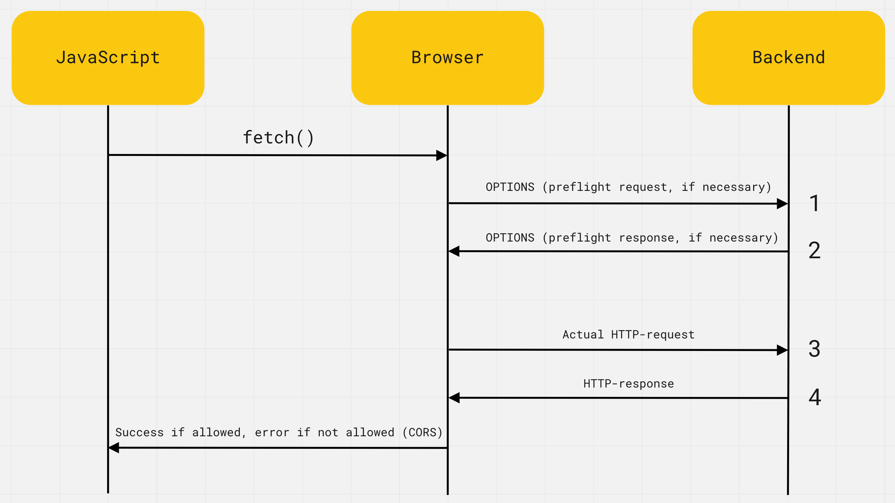

Крос-доменні запити
За замовчуванням HTTP-запит можна робити тільки в рамках поточного сайту. При спробі запиту на інший домен, порт або протокол, тобто виконати крос-доменний запит - браузер видає помилку. Це зроблено з міркувань безпеки і права доступу налаштовуються на бекенді. Якщо бекенд не підтримує крос-доменні запити, фронтенд-розробник нічого не зможе з цим зробити у своєму коді.
ЦІКАВО:
Ця політика браузерів називається CORS і розшифровується як
Cross-Origin Resource Sharing, де Origin - це і є домен, порт або
протокол. Дослівний переклад звучить як «спільне використання ресурсів
між різними джерелами».
На кожному запиті браузер сам додає HTTP-заголовок Origin, де вказує адресу веб-сторінки, яка хоче зробити HTTP-запит. Наприклад, якщо ми робимо fetch-запит з веб-сторінки https://my-site.com/about на https://my-api.com/users, то заголовки будуть наступними.
GET /users Host: my-api.com Origin: https://my-site.com
Сервер перевіряє заголовок Origin і, якщо він підтримує крос-доменні запити, додає у відповідь спеціальний HTTP-заголовок Access-Control-Allow-Origin.
# Private API Access-Control-Allow-Origin: https://my-site.com # Public API Access-Control-Allow-Origin: *
Значенням цього заголовка буде дозволене джерело (Origin). У нашому випадку це повинен бути один сайт https://my-site.com, якщо бекенд приватний, або спецсимвол *, якщо бекенд публічний - дозволяє робити запити кому завгодно.
Тобто браузер - це певний посередник між JavaScript-кодом і бекендом. Він додає кожному запиту заголовок Origin з правильним значенням і перевіряє наявність заголовка Access-Control-Allow-Origin у відповіді. Якщо заголовок є і його значення підходить, виконається оригінальний запит і JavaScript-код отримає його результат, в іншому випадку буде помилка CORS.